陳杰龍的筆記網站
陳杰龍的筆記網站 主頁
主頁 歸檔
歸檔 分類
分類 其他
其他 關於我
關於我
 期中考統整
期中考統整
記憶體管理：簡易系統
- 整個電腦系統的效能和兩項因素直接相關
- 可用的記憶體空間
- 系統在處理工作時，是否以最有效率的方式使用記憶體
- 四種記憶體配置法
- 單一使用者連續式架構(Single-User Contiguous Scheme)
- 記憶體管理器將待處理的程式「整個」載入記憶體，並安排「連續」的記憶體空間，以滿足該程式的記憶體需求
- 如果程式對記憶體的需求超過系統能夠提供的範圍，該程式便無法執行
- 問題
- 只能處理一件事情，無法支援多元程式(Multiprogramming)
- 1940~1950 主要用於研究機構，商界無法接受這種電腦--成本效益太差

- 固定分割(Fixed Partition)
- 又稱靜態分割(Static Partition)
- 主記憶體被分割成很多個固定大小的分割區，每一個分割區配置給一個工作(Job)，不等於平均
- 每一個分割區的大小，在電腦開機時就已經固定
- 想要更改分割區大小，需關機更改組態再開機
- 記憶體內可以同時保存許多程式
- 程式還是必須「整個」載入，配置「連續」的記憶體空間
- 缺點
- 大型工作不易獲得記憶體分割
- 如果目前可用記憶體分割區太小，而較大的分割區都已遭占用，大型工作就必須等待
- 如果工作大於系統最大分割區的大小，該工作就完全沒有機會執行
- 內部碎塊（Internal Fragmentation）
- 因固定分割而產生分割區內閒置空間的現象
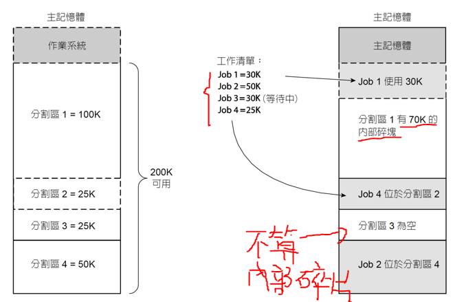
- 大型工作不易獲得記憶體分割
- 動態分割(Dynamic Partition)
- 每項工作可以配置到連續的記憶體區塊
- 只會配置所要求的記憶體空間，不多也不少
- 外部碎塊（External Fragmentation）
- 記憶體分割區之間產生的間隙
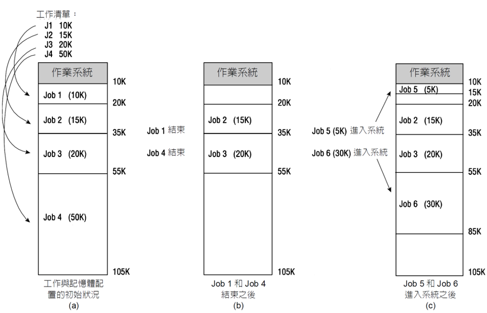
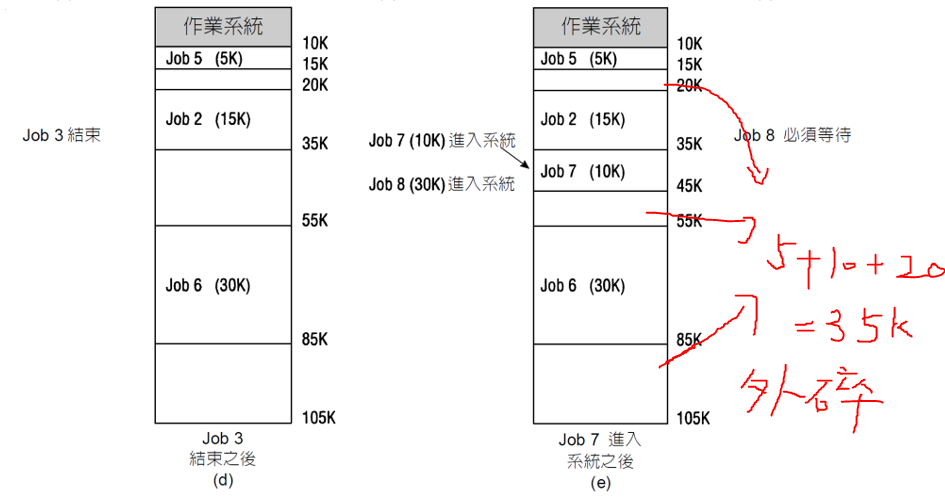
- 記憶體分割區配置策略
- 先適記憶體配置（First-Fit Memory Allocation）
- 速度快、利用率低
- 最適記憶體配置（Best-Fit Memory Allocation）
- 速度慢、利用率高
- 先適記憶體配置（First-Fit Memory Allocation）
- 可重新定址的動態分割(Relocatable Dynamic Partiton)
- 單一使用者連續式架構(Single-User Contiguous Scheme)
處理器管理
- 工作（Job）/程式（Program）
- 由使用者提出，要求系統處理的一個工作單元
- 程式是一個被動的單元
- 行程（Process）/作業（Task）
- 一個會向系統索取各種資源的主動項目
- 正在執行中的程式稱為行程
- 執行緒（Thread）
- 一個行程是由多個執行緒所組成的
- 可以獨立於其父行程
- 插斷(中斷) Interrupt
- CPU暫停目前的行程，轉換到另一件優先順序(Priority)較高的工作，叫做環境切換(Context Switch)
- 排程次級管理器
- 工作排程器（Job Scheduler）
- 高階排程器 (High-Level Scheduler)
- 負責工作的排程
- 行程排程器（Process Scheduler）
- 低階排程器 (Low-Level Scheduler)
- 負責行程的排程
- 負責安排CPU的時間，為就緒佇列中 (Ready Queue) 的工作執行它們的行程
- 行程排程器利用兩種常見的週期進行排程
- CPU週期（CPU Cycle）
- 利用CPU執行計算工作
- I/O週期（I/O Cycle）
- 利用I/O裝置進行輸出/輸入
- CPU週期（CPU Cycle）
- I/O-Bound
- CPU週期比較短而I/O週期比較長
- 大部分的時間都在做I/O，很少用到CPU
- CPU-Bound
- CPU週期比較長而I/O週期比較短
- 大部分的時間都在計算，很少進行 I/O
- 工作排程器（Job Scheduler）
- 排程策略(Scheduling Policy)
下列有一些點是互相矛盾的- 產出率最大化 (Maximize Throughput)
- 反應時間最小化 (Minimize Response Time)
- 回轉時間最小化 (Minimize Turnaround Time)
- 等待時間最小化 (Minimize Waiting Time)
- CPU 效率最大化 (Maximize CPU Efficiency)
- 公平 (Fairness) 對待每一件工作
- 強占式排程策略(Preemptive Scheduling Policy)
- 插斷目前正在執行中的行程，將CPU收回並轉而配置給另一個行程
- 非強占式排程策略(Nonpreemptive Scheduling Policy)
- 不主動收回 CPU
- ATT(Average Turnaround Time): ∑(finishTime−arrivalTime)/N
- AWT(Average Waiting Time): ∑(startTime−arrivalTime)/N
- 排程演算法
- 先來先服務 (First-Come, First-Served; FCFS)
- 依據工作抵達的時間進行排程，愈早到達的，排在愈前面
- 非強占式排程演算法
- 採用先進先出 (FIFO) 佇列
- 回轉時間(Turnaround Time) 無法預測
- Job A => 15 ms
Job B => 2 ms
Job C => 1 ms
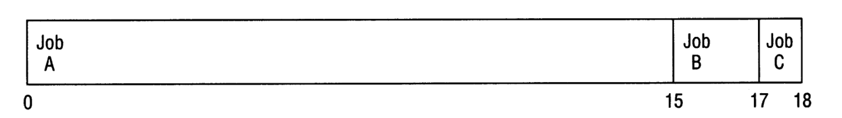
- ATT：(15-0)+(17-0)+(18-0)/3 = 16.67
AWT：(0-0)+(15-0)+(17-0)/3 = 10.67 - ATT：(1-0)+(3-0)+(18-0)/3 = 7.3
AWT：(0-0)+(1-0)+(3-0)/3 = 1.33

- 短的工作優先［Shortest Job Next (SJN)；又名Shortest-Job First (SJF) ］
- 依據CPU週期的長度最短的先進行排程
- 非強占式排程演算法
- 不適合互動式系統
- 批次系統在執行工作之前，會先對工作的CPU 週期長度提出預估
- arrivalTime : time 0
Job A => 5
Job B => 2
Job C => 6
Job D => 4
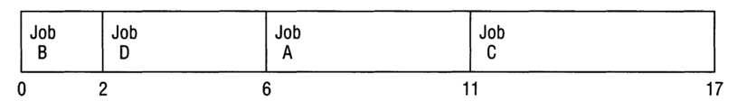
- ATT：(2-0)+(6-0)+(11-0)+(17-0)/4 = 9.0
AWT：(0-0)+(2-0)+(6-0)+(11-0)/4 = 4.75
- 優先順序排程 (Priority Scheduling)/ 權限優先法
- 非強占式演算法
- 優先順序排程優先處理優先權較高的工作
- 優先順序排程也有強占式版本
- ATT：(3-0)+(9-0)+(13-0)+(25-0)+(26-0)/5 = 15.2
AWT：(0-0)+(3-0)+(9-0)+(13-0)+(25-0)/5 = 10.0
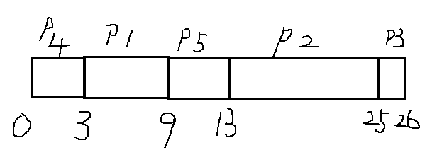Process Running time Priority P1 6 2 P2 12 4 P3 1 5 P4 3 1 P5 4 3 - 最短餘時優先 (Shortest Remaining Time, SRT)
- SJN 演算法的強占式版本
- 將處理器配置給目前就緒佇列中最接近完成的工作
- 一旦就緒佇列中出現了剩餘時間更短的工作，就立即將處理器從目前執行中的工作，轉而配置給新進的工作
- ATT：(14-0)+(5-1)+(3-2)+(9-3)/4 = 6.25
AWT：(0-0+9-1)+(1-1+3-2)+(2-2)+(5-3)/4 = 2.75
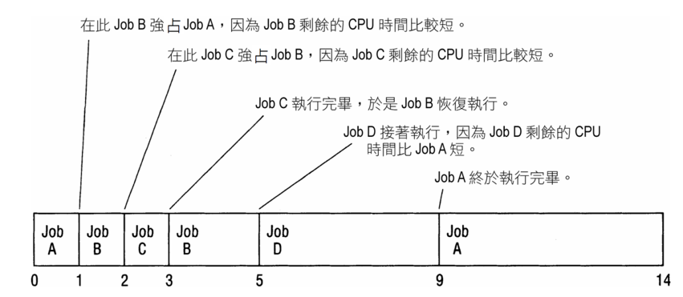Process Running time Arrival Time Job A 6 0 Job B 3 1 Job C 1 2 Job D 4 3 - 循環排程 (Round Robin, RR)
- 強占式排程演算法
- 容易實施，而且具有良好的公平性
- 排程時不考慮工作的特性
- 每一件工作輪流使用CPU，每次以一個時間單位為期限，時間到了就換下一件工作
- 時間配額 (Time Quantum)
- 適當的配額，有兩個通用的法則：
- 配額時間長度需滿足80%的CPU週期，在一個時間配額內執行完畢
- 時間配額長度應該比執行一次環境切換所需時間長100倍
- ATT：(20-0)+(8-1)+(26-2)+(25-3)/4 = 18.25
AWT：(0-0+16-4)+(4-1)+(8-2+20-12+25-24)+(12-3+24-16)/4 = 11.75
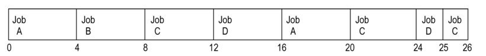Process Running time Arrival Time Time Quantum Job A 8 0 4 Job B 4 1 Job C 9 2 Job D 5 3 - 多層次佇列 (Multiple-Level Queue)
- 工作如何在不同佇列中移動
- 禁止工作在佇列間移動
- 最簡單的策略
- 允許工作在佇列間移動
- 必須制定一套調整工作優先順序的策略
- 每一層佇列的時間配額不同
- 允許工作在不同層級的佇列間移動，而且愈下層的佇列時間配額愈長
- 時間加級
- 允許工作在佇列間移動，下層佇列中等待超過一定時間的工作，將會被往上提升一個層級
- 禁止工作在佇列間移動
- 最近期限優先 (Earliest Deadline First, EDF)
- 也稱為動態優先權演算法
- 強占式排程演算法
- 主要目的是讓所有工作都能夠在各自的期限之前執行完畢
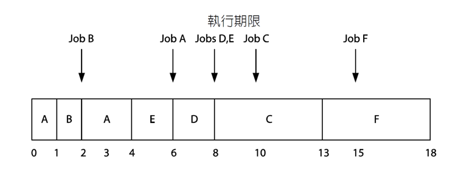Process Running time Arrival Time Deadline Job A 3 0 6 Job B 1 1 2 Job C 5 2 10 Job D 2 3 8 Job E 2 3 8 Job F 5 5 15 - 管理插斷作業
- 記憶體管理器發生分頁錯誤時，系統以分頁插斷來處理分頁的載入與置換事宜
- 工作所配置的CPU時間配額終了
- 行程內部事件，例如輸出入插斷 (I/O Interrupt)
- 算術運算也會觸發內部插斷 (Internal Interrupt)
(同步插斷(Synchronous Interrupt) )
- 先來先服務 (First-Come, First-Served; FCFS)
行程管理
- 系統可能因眾多行程競相追逐少數資源而停擺
- 在缺乏行程同步 (Process Synchronization) 的情況下，可能會發生兩種極端的症狀
- 死結 (Deadlock)
- 飢餓 (Starvation)
- 活結 (Livelock)
- 活結和死結一樣沒有生產力，區別在於死結的症狀是空等，活鎖則是瞎忙
- 死結 (Deadlock)
- 系統的整體效能會變得非常低落
- 成因通常涉及無法共用 (Nonsharable) 又不能強占 (Nonpreemptable) 的資源
- 以有向圖(Directed Graph)表現系統資源的配置狀況
- 鎖定 (Locking)
- 確保資料完整性
- 將相關的資料鎖住，禁止他人存取，可以避免其他行程的資料存取影響目前行程的資料處理作業
- 分成三個等級
- 鎖定資料庫
- 鎖定資料表
- 鎖定資料紀錄
- 競爭 (Race)
- 禁止任何行程鎖定資料紀錄當然有效
- 無法確保資料完整性
- 如果一個行程正在修改中的資料遭其他行程讀取或竄改，將會產生錯誤的計算結果
- 計算結果取決於行程排程
- 發生在周邊同作裡的死結
- 周邊同作 (Spooling)
- 作業系統以虛擬裝置 (Virtual Device) 加速印表作業的速度
- 周邊同作器 (Spooler)
- 使用者輸出到印表機的資料全部會傳送給同作器，同作器將這些資料暫存起來，等到印表機就緒之後，再依序將資料傳送給印表機列印
- 列印工作除了必須等待印表機就緒之外，也必等到使用者的印表資料全部輸出之後才會開始
- 周邊同作可能發生死結，造成印表機卡住，所有的使用者都無法列印
- 周邊同作 (Spooling)
- 死結或活鎖的條件
- 互斥 (Mutual Exclusion)
- 把持資源 (Resource Holding)
- 不可強占 (No Preemption)
- 循環等待 (Circular Wait)
- 死結模型
- 利用有向圖為死結建立模型，稱為資源配置圖(Resource Allocation Graph)
- 矩形代表資源
- 橢圓形代表行程
- 從資源指向行程的實線箭頭，表示資源已經成功地配置給行程
- 從行程指向資源的虛線箭頭，表示行程提出配置資源的需求，但是配置尚未完成 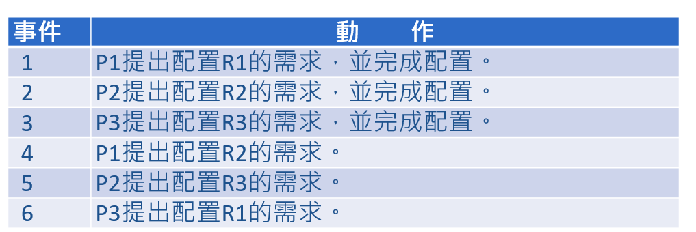 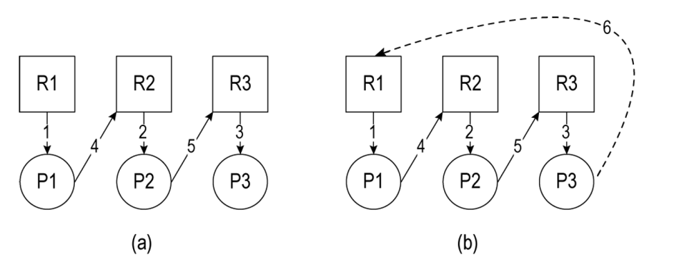
- (a) 未發生死結
- (b) 在P3 提出配置R1 的需求後，死結成型了
- 請注意圖中的循環等待 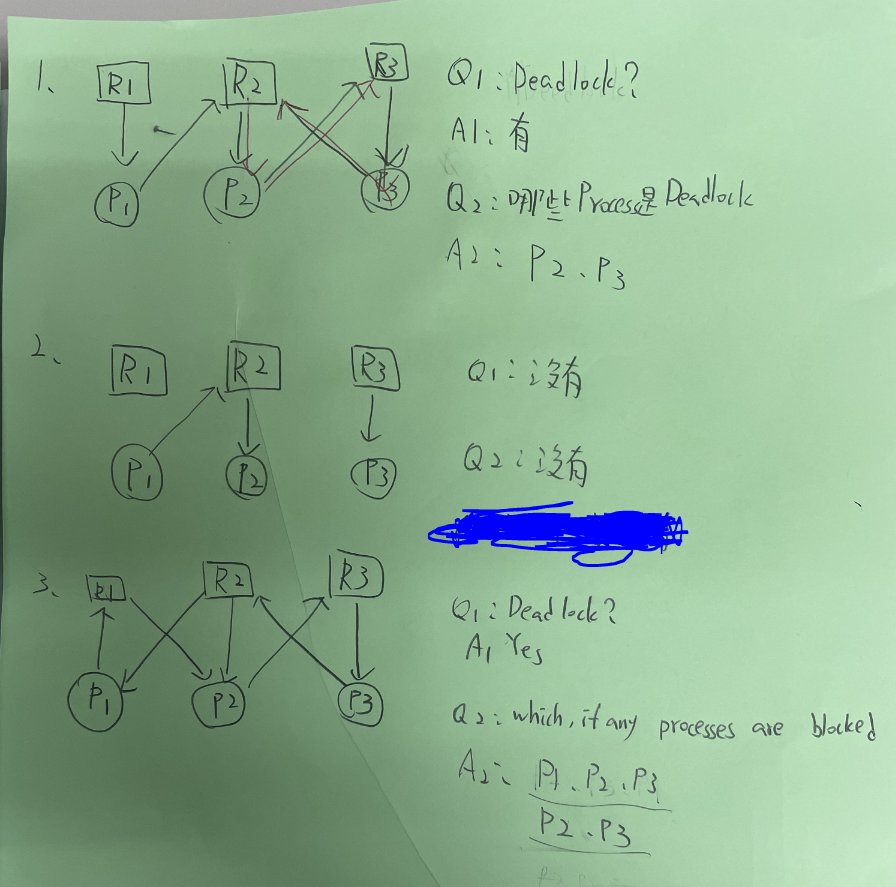
- 死結處置策略
- 預防 (Prevention)
- 設法讓死結的四項必要條件不會同時成立
- 避免 (Avoidance)
- 當死結可能發生時，設法避免死結發生
- 偵測 (Detection)
- 如果死結已經發生，設法找出死結所在，將死結解開
- 復原 (Recovery)
- 漸進式的復原
- 預防 (Prevention)
- 預防死結
- 只要讓死結的四項必要條件無法同時成立，就可以預防死結發生
- 階層順序 (Hierarchical Ordering)
- 作業系統先依序為各項資源編號
- 規定各行程都必須按照編號的順序配置資源，如此一來就不會形成循環等待
- 編號的順序必須符合絕大多數程式配置資源的順序
- 避免死結
- 存在一種資源配置的順序，可以避免死結發生
- 銀行家演算法 (Banker’s Algorithm)
- 假設銀行的資產是固定的，客戶借貸時必須經過審核
- 運作原理如下：
- 單一客戶貸款金額不可高於銀行總資產
- 每一位客戶在開戶的時候設定該帳戶的信用額度上限
- 客戶貸款金額不可超過其信用額度上限
- 客戶貸款金額的總和不可高於銀行總資產
- 審核結果
- 安全狀態 (Safe State)
- 不安全狀態 (Unsafe state)
- 銀行家演算法實務上的困難
- 程式進入系統時，必須預先確認所需的資源種類與數量，但大部分的互動式系統都無法做到這一點
- 各類資源的總量必須保持固定，如果某一部裝置突然發生故障，很可能就會讓系統從安全狀態轉為不安全狀態
- 執行中的行程數量必須保持固定，然而互動式系統不可能讓行程的數量保持不變
- 系統在接收到每一個資源配置需求時，都必須執行一次銀行家演算法，成本太高
- 銀行家演算法對資源的管制太過保守，資源利用率偏低
- 銀行家演算法讓資源利用率偏低，造成排程的困難。配置多項資源的複雜行程，可能因此發生無限期延宕的問題
- 偵測死結
- 有向圖可以用於死結的偵測
- 依照資源配置的狀況建立有向圖
- 找出圖中的迴圈
- 不但可以偵測死結是否已經發生，還可以找出牽涉其中的行程和資源
- 有向圖可以用於死結的偵測
- 復原
- 復原演算法 (Recovery Algorithm) 為了解開死結，會挑選犧牲者 (Victim)
- 被選中的行程將會停止運作，釋回所有的資源。犧牲者的資源被剝奪之後，必須重新開始執行
- 系統挑選犧牲者時，必須考慮下列因素，以降低強迫行程終止對系統造成的衝擊
- 行程的優先順序
- 行程使用的CPU時間
- 行程的相互關係
- 飢餓 (Starvation)
- 死結是放任行程自由配置資源的結果
- 飢餓則是系統介入管制資源配置的結果:某些運氣特別不好的行程一直在等待，可能永遠也等不到所需的資源
- 哲學家進餐問題 (Dinning Philosophers Problem)
- 解決飢餓問題最好的方法之一，便是時間加級 (Aging) 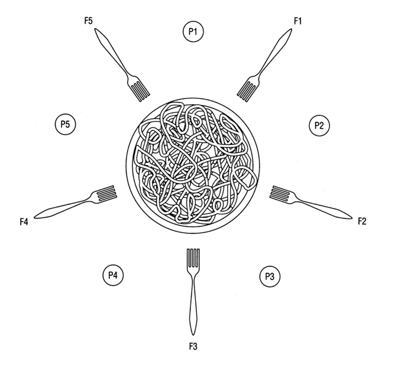